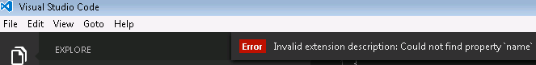

VS Code はカスタマイズしてあなたの思い通りに動かすことが可能です。このページでは VS Code を設定する最も簡単な方法を紹介しています。次の表で関連するセクションに移動して詳細を確認してください。
Tip: Extension Marketplace で VS Code のカスタマイズ (Themes, Snippets, Language Support) をシェアできます。ですから、初めにそこを見ることはいい方法と言えます。
Customization Topics
| Category | Scenario | Marketplace |
|---|---|---|
| User and Workspace settings | ワークスペースの設定を構成 (文字改行や lint 設定またその他など) | No |
| Key Bindings | キーバインドを確認して変更 | Yes |
| Tasks | 開発ワークフロー と VS Code を結びつける | No |
| Themes | VS Code にオリジナルの配色テーマを追加 | Yes |
| Basic Language Support | TextMate バンドルを介して VS Code に言語サポート (colorization, bracket matching) 、既存の言語でファイル拡張子の関連付けを追加 | Yes |
| Snippets | お気に入りの言語スニペットを追加 | Yes |
| Language | 表示言語を構成 | No |
次のステップ
あなたの道を手伝うヒントをここに紹介します。
- Extension Marketplace - 他のユーザーが共有している拡張機能を閲覧
- Yo Code - ローカルにインストールして、カスタマイズを構成
- Publishing Tool -
vscepublishing tool でカスタマイズを他のユーザーと共有
よくある質問
Q: 起動時にカスタマイズを読み込ませるにはどうすればいいですか?
A: .vscode/extensions フォルダーに放り込むと VS Code 起動時に読み込まれます。
Q: package.json で拡張要素の記述方法は何ですか?
私たちは、カスタマイズと拡張機能を読み込み/配布するのに必要な要素を書き込むためにpackage.jsonを拡張しました。拡張機能マニフェスト を参照して入力事項の概要を確認してください。
**Q: package.json に複数の contributes 属性を設定できますか?
A: はい jsonで書かれた contributes はカンマ区切りで構成できます。ですから例えば "themes": [ ] のような書き方ができます。
Q: VS Code で作成したカスタマイズが表示されませんか?
A: ジェネレーターの出力ファイルをすべて .vscode/extensions の新しいフォルダーにコピーしてください(例えば “.vscode/extensions/cooltheme”です)。そうして VS Code を再起動してみてください。
起動時にカスタマイズの問題を検出すると VS Code がデバッグに役立つエラーメッセージを表示します。
